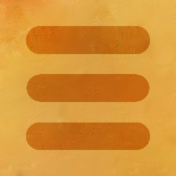

|  |
Cyberman (series) |
| Scorpius |
| Fear |
| Conversion |
| Telos |
| Outsiders |
| Terror |
| Machines |
| Extinction |
Other |
The Tenth Planet |
The Moonbase |
The Tomb of the Cybermen |
The Wheel in Space |
The Invasion |
Revenge of the Cybermen |
Earthshock |
| The Five Doctors |
Attack of the Cybermen |
Silver Nemesis |
| Rise of the Cybermen |
| The Age of Steel |
| The Next Doctor |
| The Pandorica Opens |
| The Big Bang |
| Closing Time |
| Nightmare in Silver |
| The Time of the Doctor |
| Dark Water |
| Death in Heaven |
| World Enough and Time |
| The Doctor Falls |
| Sword of Orion |
| Spare Parts |
| The Girl Who Never Was |
| The Isos Network |
| Human Resources Part 1 |
| Human Resources Part 2 |
| The Great Cyber-War |
| The Ultimate Adventure |
'Dodex' Created by tnn1nja: https://github.com/tnn1nja/dodex